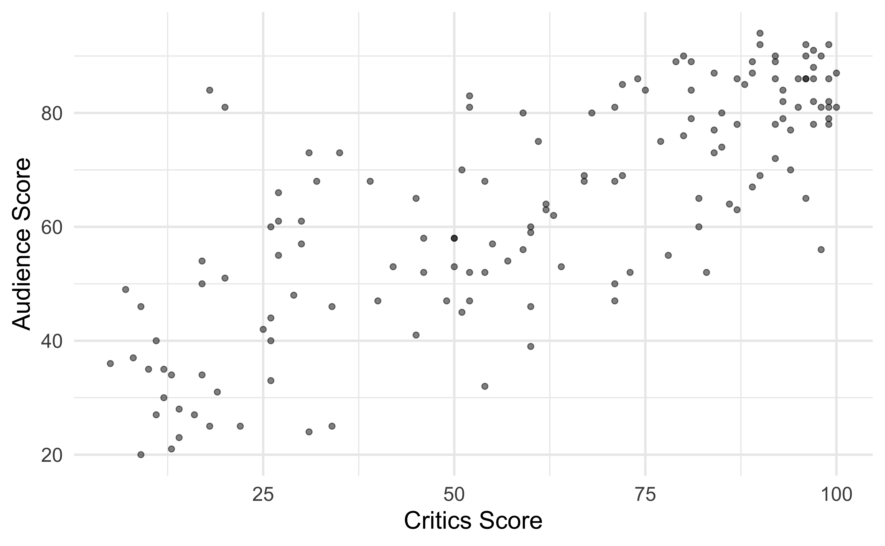
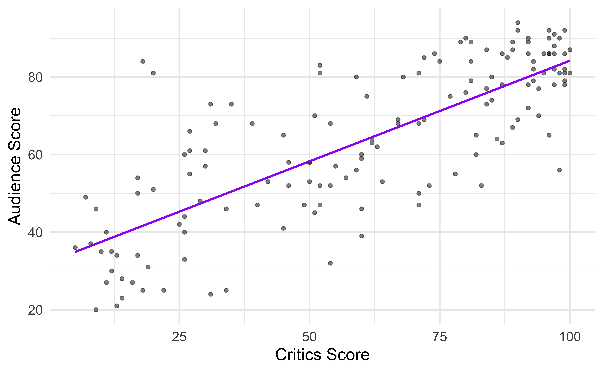
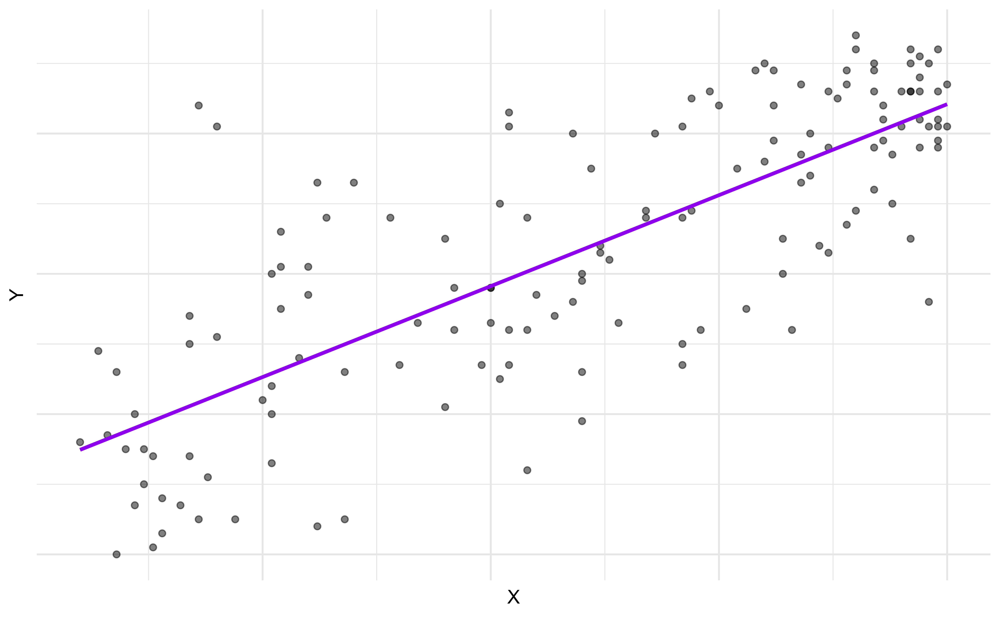
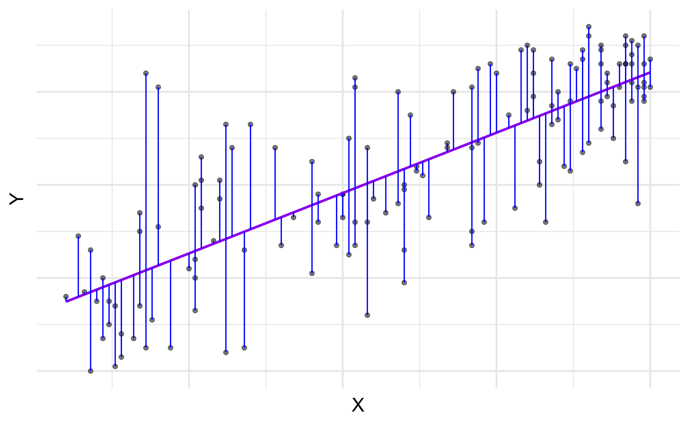
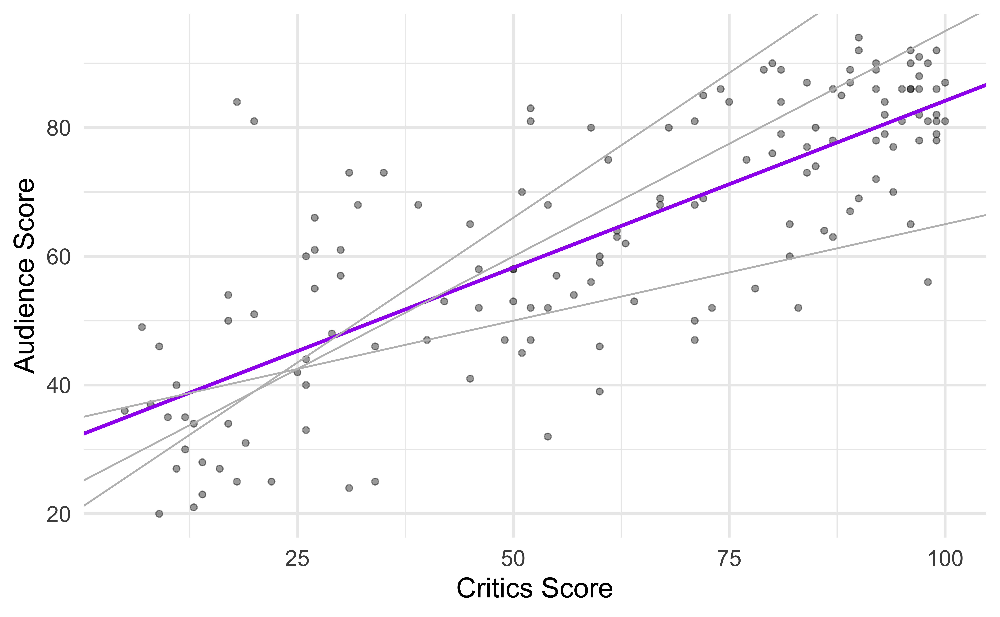
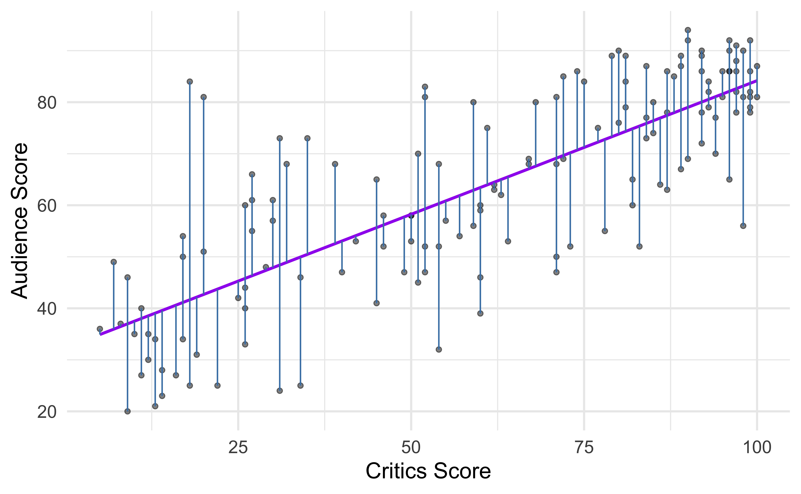
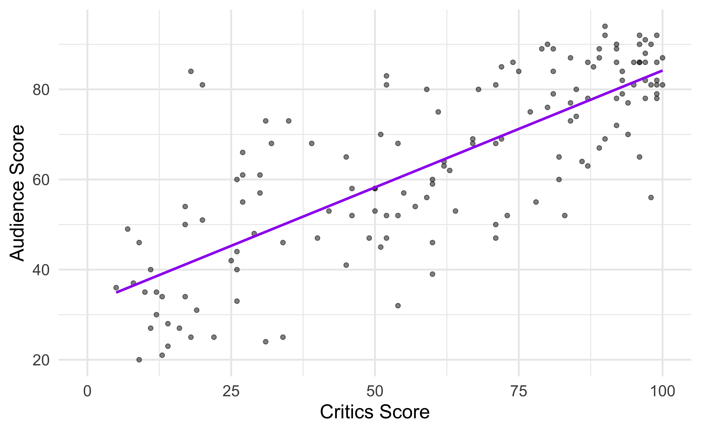

# load packages
library(tidyverse) # for data wrangling
library(tidymodels) # for modeling
library(fivethirtyeight) # for the fandango dataset
# set default theme and larger font size for ggplot2
ggplot2::theme_set(ggplot2::theme_minimal(base_size = 16))
# set default figure parameters for knitr
knitr::opts_chunk$set(
fig.width = 8,
fig.asp = 0.618,
fig.retina = 3,
dpi = 300,
out.width = "80%"
)Simple Linear Regression
STA 210 - Spring 2022
Welcome
Announcements
- If you’re just joining the class, welcome! Go to the course website and review content you’ve missed, read the syllabus, and complete the Getting to know you survey.
- Lab 1 is due Friday, at 5pm, on Gradescope.
Dorianne Gray says…
Outline
- Use simple linear regression to describe the relationship between a quantitative predictor and quantitative outcome variable
- Estimate the slope and intercept of the regression line using the least squares method
- Interpret the slope and intercept of the regression line
Computational setup
Data
Movie ratings
- Data behind the FiveThirtyEight story Be Suspicious Of Online Movie Ratings, Especially Fandango’s
- In the fivethirtyeight package:
fandango - Contains every film that has at least 30 fan reviews on Fandango, an IMDb score, Rotten Tomatoes critic and user ratings, and Metacritic critic and user scores


Data prep
- Rename Rotten Tomatoes columns as
criticsandaudience - Rename the dataset as
movie_scores
movie_scores <- fandango %>%
rename(
critics = rottentomatoes,
audience = rottentomatoes_user
)Data overview
glimpse(movie_scores)Rows: 146
Columns: 23
$ film <chr> "Avengers: Age of Ultron", "Cinderella", "A…
$ year <dbl> 2015, 2015, 2015, 2015, 2015, 2015, 2015, 2…
$ critics <int> 74, 85, 80, 18, 14, 63, 42, 86, 99, 89, 84,…
$ audience <int> 86, 80, 90, 84, 28, 62, 53, 64, 82, 87, 77,…
$ metacritic <int> 66, 67, 64, 22, 29, 50, 53, 81, 81, 80, 71,…
$ metacritic_user <dbl> 7.1, 7.5, 8.1, 4.7, 3.4, 6.8, 7.6, 6.8, 8.8…
$ imdb <dbl> 7.8, 7.1, 7.8, 5.4, 5.1, 7.2, 6.9, 6.5, 7.4…
$ fandango_stars <dbl> 5.0, 5.0, 5.0, 5.0, 3.5, 4.5, 4.0, 4.0, 4.5…
$ fandango_ratingvalue <dbl> 4.5, 4.5, 4.5, 4.5, 3.0, 4.0, 3.5, 3.5, 4.0…
$ rt_norm <dbl> 3.70, 4.25, 4.00, 0.90, 0.70, 3.15, 2.10, 4…
$ rt_user_norm <dbl> 4.30, 4.00, 4.50, 4.20, 1.40, 3.10, 2.65, 3…
$ metacritic_norm <dbl> 3.30, 3.35, 3.20, 1.10, 1.45, 2.50, 2.65, 4…
$ metacritic_user_nom <dbl> 3.55, 3.75, 4.05, 2.35, 1.70, 3.40, 3.80, 3…
$ imdb_norm <dbl> 3.90, 3.55, 3.90, 2.70, 2.55, 3.60, 3.45, 3…
$ rt_norm_round <dbl> 3.5, 4.5, 4.0, 1.0, 0.5, 3.0, 2.0, 4.5, 5.0…
$ rt_user_norm_round <dbl> 4.5, 4.0, 4.5, 4.0, 1.5, 3.0, 2.5, 3.0, 4.0…
$ metacritic_norm_round <dbl> 3.5, 3.5, 3.0, 1.0, 1.5, 2.5, 2.5, 4.0, 4.0…
$ metacritic_user_norm_round <dbl> 3.5, 4.0, 4.0, 2.5, 1.5, 3.5, 4.0, 3.5, 4.5…
$ imdb_norm_round <dbl> 4.0, 3.5, 4.0, 2.5, 2.5, 3.5, 3.5, 3.5, 3.5…
$ metacritic_user_vote_count <int> 1330, 249, 627, 31, 88, 34, 17, 124, 62, 54…
$ imdb_user_vote_count <int> 271107, 65709, 103660, 3136, 19560, 39373, …
$ fandango_votes <int> 14846, 12640, 12055, 1793, 1021, 397, 252, …
$ fandango_difference <dbl> 0.5, 0.5, 0.5, 0.5, 0.5, 0.5, 0.5, 0.5, 0.5…Data visualization

Regression model
Fit a line
… to describe the relationship between the critics and audience score

Terminology
- Outcome, Y: variable describing the outcome of interest
- Predictor, X: variable used to help understand the variability in the outcome

Regression model
A regression model is a function that describes the relationship between the outcome, \(Y\), and the predictor, \(X\).
\[\begin{aligned} Y &= \color{black}{\textbf{Model}} + \text{Error} \\[8pt] &= \color{black}{\mathbf{f(X)}} + \epsilon \\[8pt] &= \color{black}{\boldsymbol{\mu_{Y|X}}} + \epsilon \end{aligned}\]
Regression model
\[ \begin{aligned} Y &= \color{purple}{\textbf{Model}} + \text{Error} \\[8pt] &= \color{purple}{\mathbf{f(X)}} + \epsilon \\[8pt] &= \color{purple}{\boldsymbol{\mu_{Y|X}}} + \epsilon \end{aligned} \]

Regression model + residuals
\[\begin{aligned} Y &= \color{purple}{\textbf{Model}} + \color{blue}{\textbf{Error}} \\[8pt] &= \color{purple}{\mathbf{f(X)}} + \color{blue}{\boldsymbol{\epsilon}} \\[8pt] &= \color{purple}{\boldsymbol{\mu_{Y|X}}} + \color{blue}{\boldsymbol{\epsilon}} \\[8pt] \end{aligned}\]

Simple linear regression
Simple linear regression
Use simple linear regression to model the relationthip between a quantitative outcome (\(Y\)) and a single quantitative predictor (\(X\)): \[\Large{Y = \beta_0 + \beta_1 X + \epsilon}\]
- \(\beta_1\): True slope of the relationship between \(X\) and \(Y\)
- \(\beta_0\): True intercept of the relationship between \(X\) and \(Y\)
- \(\epsilon\): Error (residual)
Simple linear regression
\[\Large{\hat{Y} = \hat{\beta}_0 + \hat{\beta}_1 X}\]
- \(\hat{\beta}_1\): Estimated slope of the relationship between \(X\) and \(Y\)
- \(\hat{\beta}_0\): Estimated intercept of the relationship between \(X\) and \(Y\)
- No error term!
Choosing values for \(\hat{\beta}_1\) and \(\hat{\beta}_0\)

Residuals

\[\text{residual} = \text{observed} - \text{predicted} = y - \hat{y}\]
Least squares line
- The residual for the \(i^{th}\) observation is
\[e_i = \text{observed} - \text{predicted} = y_i - \hat{y}_i\]
- The sum of squared residuals is
\[e^2_1 + e^2_2 + \dots + e^2_n\]
- The least squares line is the one that minimizes the sum of squared residuals
Slope and intercept
Properties of least squares regression
The regression line goes through the center of mass point, the coordinates corresponding to average \(X\) and average \(Y\): \(\hat{\beta}_0 = \bar{Y} - \hat{\beta}_1\bar{X}\)
The slope has the same sign as the correlation coefficient: \(\hat{\beta}_1 = r \frac{s_Y}{s_X}\)
The sum of the residuals is zero: \(\sum_{i = 1}^n \epsilon_i = 0\)
The residuals and \(X\) values are uncorrelated
Estimating the slope
\[\large{\hat{\beta}_1 = r \frac{s_Y}{s_X}}\]
\[ \begin{aligned} s_X &= 30.1688 \\ s_Y &= 20.0244 \\ r &= 0.7814 \end{aligned} \]
\[ \begin{aligned} \hat{\beta}_1 &= 0.7814 \times \frac{20.0244}{30.1688} \\ &= 0.5187\end{aligned} \]
Estimating the intercept
\[\large{\hat{\beta}_0 = \bar{Y} - \hat{\beta}_1\bar{X}}\]
\[\begin{aligned} &\bar{x} = 60.8493 \\ &\bar{y} = 63.8767 \\ &\hat{\beta}_1 = 0.5187 \end{aligned}\]
\[ \begin{aligned}\hat{\beta}_0 &= 63.8767 - 0.5187 \times 60.8493 \\ &= 32.3142 \end{aligned} \]
Interpreting the slope
Poll: The slope of the model for predicting audience score from critics score is 32.3142. Which of the following is the best interpretation of this value?
- For every one point increase in the critics score, the audience score goes up by 0.5187 points, on average.
- For every one point increase in the critics score, we expect the audience score to be higher by 0.5187 points, on average.
- For every one point increase in the critics score, the audience score goes up by 0.5187 points.
- For every one point increase in the audience score, the critics score goes up by 0.5187 points, on average.
Interpreting slope & intercept
\[\widehat{\text{audience}} = 32.3142 + 0.5187 \times \text{critics}\]
- Slope: For every one point increase in the critics score, we expect the audience score to be higher by 0.5187 points, on average.
- Intercept: If the critics score is 0 points, we expect the audience score to be 32.3142 points.
Is the intercept meaningful?
✅ The intercept is meaningful in context of the data if
- the predictor can feasibly take values equal to or near zero or
- the predictor has values near zero in the observed data
. . .
🛑 Otherwise, it might not be meaningful!
Prediction
Making a prediction
Suppose that a movie has a critics score of 50. According to this model, what is the movie’s predicted audience score?
\[ \begin{aligned} \widehat{\text{audience}} &= 32.3142 + 0.5187 \times \text{critics} \\ &= 32.3142 + 0.5187 \times 50 \\ &= 58.2492 \end{aligned} \]
Extrapolation
Suppose that a movie has a critics score of 0. According to this model, what is the movie’s predicted audience score?

Recap
Recap
Used simple linear regression to describe the relationship between a quantitative predictor and quantitative outcome variable.
Used the least squares method to estimate the slope and intercept.å
We interpreted the slope and intercept.
- Slope: For every one unit increase in \(x\), we expect y to be higher/lower by \(\hat{\beta}_1\) units, on average.
- Intercept: If \(x\) is 0, then we expect \(y\) to be \(\hat{\beta}_0\) units.
Predicted the response given a value of the predictor variable.
Defined extrapolation and why we should avoid it.